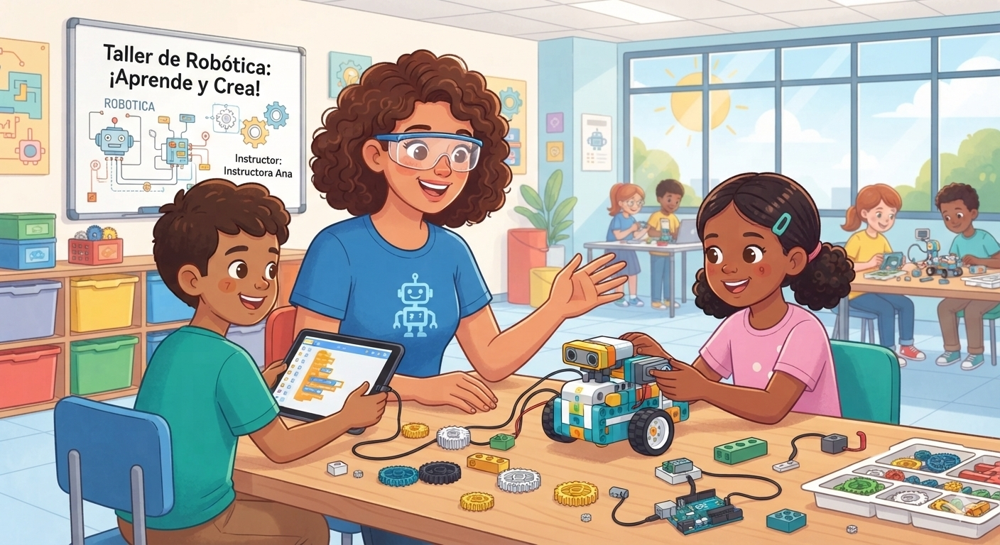

¿Qué es la Robótica?
La robótica es una rama de la tecnología y la ingeniería que se encarga del diseño, construcción, operación y aplicación de los robots. Combina disciplinas como la mecánica, la electrónica y la informática para crear sistemas automatizados capaces de realizar tareas de forma autónoma o semiautónoma.

Tipos de Robots
Descubrí las distintas formas de clasificar a los robots, sus capacidades específicas y los sectores que los emplean actualmente.